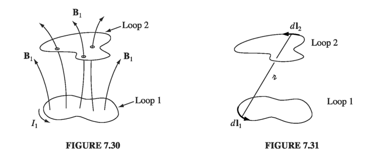

7.2: Electromagnetic Induction#
7.2.1: Faraday’s Law#
In 1831 Michael Faraday reported on a series of experiments, including three that (with some violence to history) can be characterized as follows:
Experiment 1:. He pulled a loop of wire to the right through a magnetic field (Fig 7.21a). A current flowed in the loop.
Experiment 2: He moved the magnet to the left, holding the loop still (Fig 7.21b). Again, a current flowed in the loop.
Experiment 3: With both the loop and the magnet at rest (Fig 7.21c), he changed the strength of the field (he used an electromagnet, and varied the current in the coil). Once again, current flowed in the loop.

The first experiment, of course, is a straightforward case of motional emf; according to the flux rule:
I don’t think it will surprise you to learn that exactly the same emf arises in Experiment 2 - all that really matters is the relative motion of the magnet and the loop. Indeed, in the light of special relativity it has to be so. But Faraday knew nothing of relativity, and in classical electrodynamics this simple reciprocity is a remarkable coincidence. For if the loop moves, it’s a magnetic force that sets up the emf, but if the loop is stationary, the force cannot be magnetic - stationary charges experience no magnetic forces. In that case, what is responsible? What sort of field exerts a force on charges at rest? Well, electric fields do, of course, but in this case there doesn’t seem to be any electric field in sight.
Faraday had an ingenious inspiration:
It is this induced electric field that accounts for the emf in Experiment 2. Indeed, if (as Faraday found empirically) the emf is again equal to the rate of change of the flux,
then \( \vec{E} \) is related to the change in \( \vec{B} \) by the equation
This is Faraday’s law, in integral form. We can convert it to differential form by applying Stokes’ theorem:
Note that Faraday’s law reduces to the old rule \( \oint \vec{E} \cdot \mathrm{d} \vec{l} = 0 \) (or, in differential form, \( \nabla \times \vec{E} = 0 \)) in the static case (constant \( \vec{B} \)), as, of course, it should.
In Experiment 3, the magnetic field changes for entirely different reasons, but according to Faraday’s law an electric field will again be induced, giving rise to an emf \( - d \Phi / dt \). Indeed, one can subsume all three cases (and for that matter any combination of them) into a kind of universal flux rule:
Tip
Whenever (and for whatever reason) the magnetic flux through a loop changes, an emf
will appear in the loop.
Many people call this “Faraday’s law.” Maybe I’m overly fastidious, but I find this confusing. There are really two totally different mechanisms underlying Eq. 7.17, and to identify them both as “Faraday’s law” is a little like saying that because identical twins look alike we ought to call them by the same name. In Faraday’s first experiment, it’s the Lorentz force law at work; the emf is magnetic. But in the other two it’s an electric field (induced by the changing magnetic field) that does the job. Viewed in this light, it is quite astonishing that all three processes yield the same formula for the emf. In fact, it was precisely this “coincidence” that led Einstein to the special theory of relativity - he sought a deeper understanding of what is, in classical electrodynamics, a peculiar accident. But that’s a story for chapter 12. In the meantime, I shall reserve the term “Faraday’s law” for electric fields induced by changing magnetic fields, and I do not regard Experiment 1 as an instance of Faraday’s law.
Example 7.5#
A long cylindrical magnet of length \( L \) and radius \( a \) carries a uniform magnetization \( \vec{M} \) parallel to its axis. It passes at constant velocity \( \vec{v} \) through a circular wire ring of slightly larger diameter (Fig. 7.22). Graph the emf induced in the ring, as a function of time.

The magnetic field is the same as that of a long solenoid with surface current \( \vec{K}_b = M \hat{\phi} \) . So the field inside is \( \vec{B} = \mu_0 \vec{M} \) , except near the ends, where it starts to spread out. The flux through the ring is zero when the magnet is far away; it builds up to a maximum of \( \mu_0 M \pi a^2 \) as the leading end passes through; and it drops back to zero as the trailing end emerges (Fig. 7.23a). The emf is (minus) the derivative of \( \Phi \) with respect to time, so it consists of two spikes, as shown in Fig. 7.23b.

Keeping track of the signs in Faraday’s law can be a real headache. For instance, in Ex. 7.5 we would like to know which way around the ring the induced current flows. In principle, the right-hand rule does the job (we called \( \Phi \) positive to the left, in Fig. 7.22, so the positive direction for current in the ring is counter-clockwise, as viewed from the left; since the first spike in Fig. 7.23b is negative, the first current pulse flows clockwise, and the second counterclockwise). But there’s a handy rule, called Lenz’s law, whose sole purpose is to help you get the directions right:
Tip
Nature abhors a change in flux
The induced current will flow in such a direction that the flux it produces tends to cancel the change. (As the front end of the magnet in Ex. 7.5 enters the ring, the flux increases, so the current in the ring must generate a field to the right - it therefore flows clockwise.) Notice that it is the change in flux, not the flux itself, that nature abhors (when the tail end of the magnet exits the ring, the flux drops, so the induced current flows counterclockwise, in an effort to restore it). Faraday induction is a kind of “inertial” phenomenon: A conducting loop “likes” to maintain a constant flux through it; if you try to change the flux, the loop responds by sending a current around in such a direction as to frustrate your efforts. (It doesn’t succeed completely; the flux produced by the induced current is typically only a tiny fraction of the original. All Lenz’s law tells you is the direction of the flow.)
Example 7.6#
The ‘jumping ring’ demonstration. If you wind a solenoidal coil around an iron core (the iron is there to beef up the magnetic field), place a metal ring on top, and plug it in, the ring will jump several feet in the air (Fig 7.24). Why?

Before you turn on the current, the flux through the ring was zero. Afterward a flux appeared (upward in the diagram), and the emf generated in the ring led to a current (in the ring) which, according to Lenz’s law, was in such a direction that its field tended to cancel this new flux. This means that the current in the loop is opposite to the current in the solenoid. As opposite currents repel (as we saw in our Biot-Savart calculations in the last chapter), the ring flies off.
7.2.2: The Induced Electric Field#
Faraday’s law generalizes the electrostatic rule \( \nabla \times \vec{E} = 0 \) to the time-dependent regime. The divergence of \( \vec{E} \) is still given by Gauss’s law (\( \nabla \cdot \vec{E} = \frac{1}{\epsilon_0} \rho \) ). If \( \vec{E} \) is a pure Faraday field (due exclusively to a changing \( \vec{B} \) , with \( \rho = 0 \) ), then
This is mathematically identical to magnetostatics
Conclusion: Faraday-induced electric fields are determined by \( -(\partial \vec{B} / \partial t) \) in exactly the same way as magnetostatic fields are determined by \( \mu_0 \vec{J} \). The analog to Biot-Savart is
and if symmetry permits, we can use all the tricks associated with Ampere’s law in integral form (\( \oint \vec{B} \cdot \mathrm{d} \vec{l} = \mu_0 I_{enc} \)), only now it’s Faraday’s law in integral form:
The rate of change of (magnetic) flux through the Amperian loop plays the role formerly assigned to \( \mu_0 I_{enc} \).
Example 7.7#
A uniform magnetic field \( \vec{B}(t) \), pointing straight up, fills the shaded circular region of Fig. 7.25. If \( \vec{B} \) is changing with time, what is the induced electric field?

\( \vec{E} \) points in the circumferential direction, just like the magnetic field inside a long straight wire carrying a uniform current density. Draw an Amperian loop of radius \( s \), and apply Faraday’s law:
Therefore
If \( \vec{B} \) is increasing, \( \vec{E} \) runs clockwise, as viewed from above.
Example 7.8#
A line charge \( \lambda \) is glued to the rim of a wheel of radius \( b \), which is then suspended horizontally, as shown in Fig 7.26, so that it is free to rotate (the spokes are made of some nonconducting material - wood, maybe). In the central region, out to radius \( a \) , there is a uniform magnetic field \( \vec{B}_0 \), pointing up. Now someone turns the field off. What happens?
The changing magnetic field will induce an electric field, curling around the axis of the wheel. This electric field exerts a force on the charges at the rim, and the wheel starts to turn. According to Lenz’s law, it will rotate in such a direction that its field tends to restore the upward flux. The motion, then, is counterclockwise, as viewed from above. Faraday’s law, applied to the loop at radius \( b \), says
or
The torque on a segment of length \( \mathrm{d} \vec{l} \) is \( (\vec{r} \times \vec{F}) \) , or \( b \lambda E \mathrm{d} l \) . The total torque on the wheel is therefore
and the angular momentum imparted to the wheel is
It doesn’t matter how quickly or slowly you tum off the field; the resulting angular velocity of the wheel is the same regardless. (If you find yourself wondering where the angular momentum came from, you’re getting ahead of the story! Wait for the next chapter.)
Note that it’s the electric field that did the rotating. To convince you of this, I deliberately set things up so that the magnetic field is zero at the location of the charge. The experimenter may tell you she never put in any electric field - all she did was switch off the magnetic field. But when she did that, an electric field automatically appeared, and it’s this electric field that turned the wheel.
I must warn you, now, of a small fraud that tarnishes many applications of Faraday’s law: Electromagnetic induction, of course, occurs only when the magnetic fields are changing, and yet we would like to use the apparatus of magnetostatics (Ampere’s law, the Biot-Savart law, and the rest) to calculate those magnetic fields. Technically, any result derived in this way is only approximately correct. But in practice the error is usually negligible, unless the field fluctuates extremely rapidly, or you are interested in points very far from the source. Even the case of a wire snipped by a pair of scissors (Prob. 7.18) is static enough for Ampere’s law to apply. This regime, in which magnetostatic rules can be used to calculate the magnetic field on the right hand side of Faraday’s law, is called quasistatic. Generally speaking, it is only when we come to electromagnetic waves and radiation that we must worry seriously about the breakdown of magnetostatics itself.
Example 7.9#
An infinitely long straight wire carries a slowly varying current \( I(t) \). Determine the induced electric field, as a function of the distance \( s \) from the wire

In the quasistatic approximation, the magnetic field is \( (\mu_0 I / 2 \pi s) \) and it circles around the wire. Like the B-field of a solenoid, E here runs parallel to the axis. For the rectangular “Amperian loop” in Fig 7.27, Faraday’s law gives:
Thus
where \( K \) is a constant (that is to say, it is independent of \( s \) - it might still be a function of \( t \) ). The actual value of \( K \) depends on the whole history of the function \( I(t) \) - we’ll see some examples in Chapter 10.
Equation 7.20 has the particular implication that \( E \) blows up as \( s \) goes to infinity. That can’t be true… What’s gone wrong? Answer: we have overstepped the limits of the quasistatic approximation. As we shall see in Chapter 9, electromagnetic “news” travels at the speed of light, and at large distances B depends not on the current now, but on the current as it was at some earlier time (indeed, a whole range of earlier times, since different points on the wire are different distances away). If \( \tau \) is the time it takes \( I \) to change substantially, then the quasistatic approximation should hold only for
and hence Eq. 7.20 simply does not apply, at extremely large \( s \).
7.2.3: Inductance#
Suppose you have two loops of wire, at rest (Fig 7.30). If you run a steady current \( I_1 \) around loop 1, it produces a magnetic field \( \vec{B}_1 \) . Some of the field lines pass through loop 2; let \( \Phi_2 \) be the flux of \( \vec{B}_1 \) through 2. You might have a tough time actually calculating \( \vec{B_1} \), but a glance at the Biot-Savart law,
reveals one significant fact about this field: It is proportional to the current \( I_1 \) . Therefore, so too is the flux through loop 2:
Thus
where \( M_{21} \) is the constant of proportionality; it is known as the mutual inductance of the two loops.

There is a cute formula for the mutual inductance, which you can derive by expressing the flux in terms of the vector potential, and invoking Stokes’ theorem:
Now, according to Eq. 5.66,
and hence
Evidently
This is the Neumann formula; it involves a double line integral - one integration around loop 1, the other around loop 2 (Fig 7.31). It’s not very useful for practical calculations, but it does reveal two important things about the mutual inductance:
\( M_{21} \) is a purely geometrical quantity, having to do with the sizes, shapes, and relative positions of the two loops.
The integral in Eq. 7.23 is unchanged if we switch the roles of loops 1 and 2; it follows that
This is an astonishing conclusion: Whatever the shapes and positions of the loops, the flux through 2 when we run a current I around 1 is identical to the flux through 1 when we send the same current I around 2. We may as well drop the subscripts and call them both M.
Example 7.10#
A short solenoid (length \( l \) and radius \( a \), with \( n_1 \) turns per unit length) lies on the axis of a very long solenoid (radius \( b \) , \( n_2 \) turns per unit length) as shown in Fig 7.32. Current \( I \) flows in the short solenoid. What is the flux through the long solenoid?

Since the inner solenoid is short, it has a very complicated field; moreover, it puts a different flux through each turn of the outer solenoid. It would be a miserable task to compute the total flux this way. However, if we exploit the equality of the mutual inductances, the problem becomes very easy. Just look at the reverse situation: run the current \( I \) through the outer solenoid, and calculate the flux through the inner one. The field inside the long solenoid is constant
so the flux through a single loop of the short solenoid is
There are \( n_1 l \) turns in all, so the total flux through the inner solenoid is
This is also the flux a current \( I \) in the short solenoid would put through the long one, which is what we set out to find. Incidentally, the mutual inductance, in this case, is
Suppose now, that you vary the current in loop 1. The flux through loop 2 will vary accordingly, and Faraday’s law says this changing flux will induce an emf in loop 2:
(In quoting Eq. 7.22 - which was based on the Biot-Savart law - I am tacitly assuming that the currents change slowly enough for the system to be considered quasistatic.) What a remarkable thing: Every time you change the current in loop 1, and induced current flows in loop 2 - even though there are no wires connecting them!
Come to think of it, a changing current not only induces an emf in any nearby loops, it also induces an emf in the source loop itself (Fig 7.33). Once again, the field (and therefore the flux) is proportional to the current
The constant of proportionality \( L \) is called the self inductance (or simply the inductance) of the loop. As with \( M \), it depends on the geometry (side and shape ) of the loop. If the current changes, the emf induced in the loop is
Inductance is measured in henries (H); a henry is a volt-second per ampere.
Example 7.11#
Find the self inductance of a toroidal coil with rectangular cross-section (inner radius \( a \), outer radius \( b \), height \( h \)), that carries a total of \( N \) turns.
The magnetic field inside of a toroid is
 The flux through a single turn (Fig 7.34) is
The flux through a single turn (Fig 7.34) is
The total flux is \( N \) times this, so the self-inductance (Eq. 7.26) is
Inductance (like capacitance) is an intrinsically positive quantity. Lenz’s law, which is enforced by the minus sign in Eq. 7.27, dictates that the emf is in such a direction as to oppose any change in current. For this reason, it is called a back emf. Whenever you try to alter the current in a wire, you must fight against this back emf. Inductance plays somewhat the same role in electric currents that mass plays in mechanical systems: The greater \( L \), the harder it is to change the current, just as the larger the mass, the harder it is to change an object’s velocity.
Example 7.12#
Suppose a current \( I \) is flowing around a loop, when someone suddenly cuts the wire. The current drops “instantaneously” to zero. This generates a whopping back emf, for although \( I \) may be small, \( d I / d t \) is enormous. (That’s why you sometimes draw a spark when you unplug an iron or toaster - electromagnetic induction is desperately trying to keep the current going, even if it has to jump the gap in the circuit.) Nothing so dramatic occurs when you plug in a toaster or iron. In this case induction opposes the sudden increase in current, prescribing instead a smooth and continuous buildup. Suppose, for instance, that a battery (which supplies a constant emf \( \mathcal{E}_0 \) ) is connected to a circuit of resistance \( R \) and inductance \( L \) (Fig. 7.35). What current flows?

The total emf in this circuit is \( \mathcal{E}_0 \) from the battery plus \( -L (\frac{\mathrm{d} I}{\mathrm{d} t}) \) from the inductance. Ohm’s law says
This is a first-order differential equation for \( I \) as a function of time. The general solution is
where \( k \) is a constant to be determined by the initial conditions. In particular, if you close the switch at time \( t = 0 \), so \( I(0) = 0 \), then \( k = - \mathcal{E}_0 / R \), and
This function is plotted in Fig 7.36. Had there been no inductance in the circuit, the current would have jumped immediately to \( \mathcal{E}_0 / R \). In practice, every circuit has some self-inductance, and the current approaches \( \mathcal{E}_0 / R \) asymptotically. The quantity \( \tau = L / R \) is the time constant for an LR circuit; it tells you how long the current takes to reach a substantial fraction \( (1 - 1/e) \) of its final value.

7.2.4: Energy in Magnetic Fields#
It takes a certain amount of energy to start a current flowing in a circuit. I’m not talking about the energy delivered to the resistors and converted into heat - that is irretrievably lost, as far as the circuit is concerned, and can be large or small, depending on how long you let the current run. What I am concerned with, rather, is the work you must do against the back emf to get the current going. This is fixed amount, and it is recoverable: you get it back when the current is turned off. In the meantime, it represents energy latent in the circuit; as we’ll see in a moment, it can be regarded as energy stored in the magnetic field.
The work done on a unit charge, against the back emf, in one trip around the circuit is \( - \mathcal{E} \) (the minus sign records the fact that this is the work done by you against the emf, not the work done by the emf). The amount of charge per unit time passing down the wire is I. So the total work done per unit time is
If we start with zero current and build it up to a final value I, the work done (integrating the last equation over time) is
So, this is the energy stored in an inductor, or in any loop that has an inductance \( L \). It does not depend on how long we take to crank up the current, only on the geometry of the loop (in the form of \( L \) ) and the final current \( I \).
This is only really sensible for a system of conducting loops, but we can be a bit more general. We can express \( W \) by recalling that the flux \( \Phi \) through a loop (which is \( LI \) ) is
where the line integral is around the perimeter of the loop. So, we have
and therefore
We can pretty obviously generalize this to volume currents
But we can do one better, expressing \( W \) entirely in terms of the magnetic field: \( \nabla \times \vec{B} = \mu_0 \vec{J} \) lets us eliminate the current density from the picture
Integration by parts gets us to slap the derivative from B to A
so
Consequently
Now, the integration in Eq. 7.32 is to be taken over the entire volume occupied by the current. But any region larger than this will do just as well, for \( \vec{J} \) is zero out there anyway. In Eq. 7.34, the larger the region we pick the greater is the contribution from the volume integral, and therefore the smaller is that of the surface integral (this makes sense: as the surface gets farther from the current, both A and B decrease). In particular, if we agree to integrate over all space, then the surface integral goes to zero, and we are left with
In view of this result, we say the energy is “stored in the magnetic field,” in the amount \( (B^2 / 2 \mu_0) \) per unit volume. This is a nice way to think of it, though someone looking at Eq. 7.32 might prefer to say that the energy is stored in the current distribution, in the amount \( \frac{1}{2} (\vec{A} \cdot \vec{J}) \) per unit volume. The distinction is one of bookkeeping; the important quantity is the total energy \( W \) , and we need not worry about where (if anywhere) the energy is “located.”
You might find it strange that it takes energy to set up a magnetic field - after all, magnetic fields themselves do no work. The point is that producing a magnetic field, where previously there was none, requires changing the field, and a changing B-field, according to Faraday, induces an electric field. The latter, of course, can do work. In the beginning, there is no \( \vec{E} \) , and at the end there is no \( \vec{E} \) ; but in between, while \( \vec{B} \) is building up, there is an \( \vec{E} \) , and it is against this that the work is done. (You see why I could not calculate the energy stored in a magnetostatic field back in Chapter 5.) In the light of this, it is extraordinary how similar the magnetic energy formulas are to their electrostatic counterparts:
Example 7.13#
A long coaxial cable carries current \( I \) (the current flows down the surface of the inner cylinder, radius \( a \) , and back along the outer cylinder, radius \( b \) ) as shown in Fig 7.40. Find the magnetic energy stored in a section of length \( l \)

Ampere’s law will tell us that B between the surfaces is
and outside the cable, the field is zero. Eq. 7.35 gives us the volume energy density
The energy in a shell of length \( l \), radius \( s \) and thickness \( \mathrm{d} s \) is
Integrating from \( a \) to \( b \) , we have
Incidentally, this suggests a very simple way to calculate the self-inductance of the cable. According to Eq. 7.30, the energy can also be written as \( \frac{1}{2} L I^2 \). Comparing the two expressions,
This method of calculating the self-inductance is especially useful when the current is not confined to a single path, but spreads over some surface or volume, so that different parts of the current enclose different amounts of flux. In such cases, it can be very tricky to get the inductance directly from Eq. 7.26, and it is best to let 7.30 define L